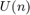
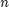
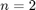
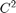
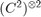
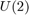

The unitary group  describes the possible change of basis in the complex Hilbert space of dimension . For , this captures the possible choices of basis in the qubit space . For a system composed of two qubits, we can similarly define the effect of a joint change of basis performed on both subsystems simultaneously. It is known that a single state is invariant under such joint change of basis. Here, we identify this state by extracting the subspace of  which is invariant under the joint change of basis for both subsystems.
Before trying any of the RepLAB commands, we must initialize the library:
replab_init
Changes of bases for one system are described by the group 
d = 2; U2 = replab.UnitaryGroup(d);
We construct the defining representation of this group, which acts on :
U2Rep = U2.definingRep;
We can now construct the representation which acts jointly on two subsystems of dimension 2:
U2TensorRep = kron(U2Rep, U2Rep);
To identify the subspaces which are invariant under this group, we decompose the representation:
dec = U2TensorRep.decomposition;
The decomposition has
dec.nComponents
ans =
2
components, of dimension
dec.component(1).irrepDimension
ans =
1
and
dec.component(2).irrepDimension
ans =
3
These are the antisymmetric and symmetric subspaces respectively. The change of basis into the first component identifies the antisymetric subspace, also known as the Singlet state:
phiMinus = dec.component(1).U
phiMinus =
0 0.7071 -0.7071 0